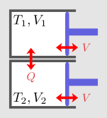
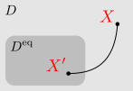
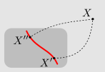

エントロピーの概念を多容器系に拡張したい。
エントロピーは、一般の平衡状態に対しても存在するのではないか
2容器の場合にも、可逆性の判定を行いたい。即ち、2容器系
(𝑈1,𝑉1,𝑈2,𝑉2)
の任意の2つの平衡状態に対して、どちらからどちらに移行可能であるかを判定したい。容器1のエネルギーと体積がそれぞれ
𝑈1,𝑉1
、容器2のエネルギーと体積がそれぞれ
𝑈2,𝑉2
である。また、系全体は断熱的であるとする（＝系全体が断熱壁で覆われていて外部との熱のやり取りがない）。
新たに熱接触を考慮する
2つの容器がそれぞれ断熱されている場合は、前章の場合と同じである。即ち、容器ごとにエントロピーが定義できて、不可逆な変形（＝非準静的または摩擦を伴う変形）によってそれらの値を大きくすることはできるが、小さくすることは決してできない。これに加えて、2つの容器同士の熱接触も含めて考える（熱接触させたり離したりする）。経験的に知られているように、熱的な接触は不可逆であり、可逆性の議論に適している。実際、温度の異なる物体同士を接触させると温度が等しくなる方向に変化が起こるが、これは一方的でありその逆の過程は生じない。他にも、熱と可逆性が関係している例として、力学編で扱った振り子などでは、実際には摩擦のために減衰し、そのうち必ず止まる。この不可逆過程にも摩擦熱の形で熱が伴っている。
エントロピーを使って可逆性を判定したい
前章のエントロピーの議論がここでも成り立つのであれば、エントロピー関数
𝑆𝑈1𝑉1𝑈2𝑉2
が存在して、不可逆な操作（＝非準静操作、摩擦、熱接触）を行うと値が大きくなる。そして、
𝑆
が等しい状態間は行き来が可能で、小さくなる状態へは移行不可能ということになる（断熱操作で）。このような
𝑆𝑈1𝑉1𝑈2𝑉2
を見つけたい。
可逆操作から等エントロピー面が定義できるはず
前章でどのようにエントロピーを定義したかというと、等エントロピー曲線（＝断熱曲線）に値を割り振ることを考えたのであった。等エントロピー曲線は、可逆な操作で作られる曲線である。また、この曲線によって平衡状態空間が（断熱的に移行可能／不可能な部分に）二分された。今回も考え方は同様である。即ち、可逆操作をすべて集めれば、それらの可逆操作で移動できる領域として、等エントロピー面が定義できる。得られた等エントロピー面は、
𝑈1,𝑉1,𝑈2,𝑉2
からなる4次元の平衡状態空間を二分するはずである。後は、等エントロピー面ごとに値を割り振ればよい（どのように割り振るかは次章で扱う）。
エントロピーの有用性について述べるところから始めよう
可逆操作は、前章の断熱曲線と同様に微分方程式（等エントロピー面への拘束条件）になるはずである。ただし、その微分方程式だけでは等エントロピー面が実際に定義できるとは言えない。というのも、力学編の15.3節で述べたように、フロベニウスの定理から得られる可積分条件を満たす必要があるからである。この章では、これらを各々の節に分けて議論するが、まずはエントロピーの有用性について述べるところから始めよう：4.1エントロピーの有用性4.22容器系の可逆操作4.3エントロピーの存在条件
4.1エントロピーの有用性
エントロピーを求めようとしているわけだが、その動機はこれまでのところ単に理論的なものであった。こんなものを求めて何の役に立つのか、と思うかもしれない。熱力学は、「エントロピーの性質から何が導かれるか」を主題とした学問である。とはいえ、直接、ある過程が可逆か不可逆かを判定したいという場面はあまりなさそうである。そこでエントロピーの有効性として、先取りにはなるが、以下の3つについて述べておこう：
1.変化の方向の導出2.平衡条件の導出3.最大効率の計算
4.1.11. 変化の方向の導出
1つ目は変化の方向の導出である。これは、エントロピーが「不可逆性の尺度である」という性質を直接使ったものである。
エントロピーは運動「不等式」
力学において、運動方程式は、ある初期状態Aから
𝑡
秒後の状態Bを求めるものであった。一方、エントロピーは（断熱系において）ある状態Aから別の状態Bに移行出来るかどうかを、その値の大小によって示すものである。両者はともに時間発展に関する法則に属しており、エントロピーとは、運動方程式ならぬ運動不等式と見なせるものである。
エントロピーは変化の方向を決める
力学における運動方程式ほどの圧倒的な実用性はないが、変化の方向を決めるというエントロピーの性質が役に立つ場面がある。例えば、化学反応によってある物質Cを生成したいと考えたとき、その物質Cが生成される方向に反応が進むかどうかは重要な問題である。物質Cの生成によってエントロピーが増大するならば、その反応は自発的に進行すると判断できるわけである（断熱系かつ拘束条件を満たしているとする）。
4.1.22. 平衡条件の導出
2つ目は、平衡条件の導出である。
平衡状態ではエントロピーが極大になっている
まず、平衡状態はそもそも、マクロな変化が何も起きなくなっている状態である。よって、それ以上の不可逆過程は生じないはずである。要するに、平衡状態は、最も不可逆な状態（＝エントロピーが極大の状態）になっていると考えられる。もちろん、エネルギー保存則などの制約条件の下で、である。
エントロピーの極値問題を解けば平衡状態が求まる
これを認めれば、平衡状態が満たすべき条件を
平衡状態=エントロピーの極大点
という形で書き下すことができる。この平衡条件を解くことで、平衡状態が計算できるはずである（第7章以降で扱う）。第1章と第2章で扱った熱接触の場合、平衡条件は、等温・等圧という自明な形となったので、エントロピーを考えるまでもない。しかし、第7章以降で扱うように、例えば、「水と氷が共存していてる場合」や「化学反応が起きる場合」といった、多成分・多相系では、自明な関係式だけでは足りず、エントロピーを用いた定式化が必要になる。
4.1.33. 最大効率の計算
3つ目は、最大効率の計算である。
不可逆過程は効率を下げる
例えば、振り子の場合、振り子が持っている力学的エネルギーを使って様々な作業を行うことができる。しかし、不可逆過程、即ち、摩擦が伴うと、振り子はやがて止まってしまい何もできなくなる。このように、不可逆過程が生じると、取り出せるエネルギーが減少する。他にも、熱を利用した機関（車のエンジンや蒸気機関など）も、熱を無駄に外部に捨てると効率が悪くなる。
効率が最大になるのは可逆な場合
そのため、最も効率が良いのは可逆過程であると考えられる。実際、第9章でみるように、エントロピーを使って効率が満たすべき不等式を書き下すことができ、等エントロピー過程（＝可逆過程）で効率が最大になることが言える。これを使うと例えば、「冷房によって部屋を冷やす際の最大効率（第9章）」や「電池から取り出せる最大仕事（＝最大起電力）」などが計算できる。
以上のように、エントロピーは、単に理論的な興味というだけではないのである。では、気を取り直して、2容器系の可逆操作を探す所から再開しよう。
4.22容器系の可逆操作
さて、エントロピー関数
𝑆𝐸1𝑉1𝐸2𝑉2
を求めるためには、等エントロピー面を構成できるだけの可逆操作を見つけてくればよいのであった。この節では、その可逆操作が、「分離した状態の各容器の準静変形」と「接触させた状態での共等温変形（後述）」であることを述べる。
4.2.1分離した状態の容器の準静変形は可逆である ⇒ 式(1)
まず、これまでの知識から明かな準静変形がある。即ち
容器が分離していれば、各容器の準静変形は可逆である
これを分離型準静変形と呼ぶことにする。
分離型準静変形の方程式
分離型準静変形では、各々の容器が断熱曲線上を動くことになる。再掲断熱曲線が満たす微分方程式は、前章で見たように、以下である：
𝛿𝑈+𝑃𝑈𝑉𝛿𝑉≐0
従って、分離型準静変形が満たす方程式は
𝛿𝑈1+𝑃𝑈1𝑉1𝛿𝑉1≐0𝛿𝑈2+𝑃𝑈2𝑉2𝛿𝑉2≐0}(1)
となる。
条件が足りない
現状だと、それぞれの容器に対して、エントロピー
𝑆1,𝑆2
が定義できて
𝑆1=const.𝑆2=const.}
を同時に満たすような操作が可逆であることまでしか言えていない。これを、
𝑆=const.
という1つの式で表せるようにするには、可逆操作が足りない。
4.2.2共等温変形も可逆である ⇒ 式(4)

可逆操作は他にもあるはずである。
共等温変形は可逆である
そこで右図のように、容器同士を熱的に接触させて平衡状態にし、そのまま、一方または両方の容器を準静変形することを考える。2容器を合わせた系全体は１つの断熱容器なのだから、その準静変形は可逆となると期待できる。共等温変形このように、「2つの容器が熱的に接触した状態での準静変形」を共等温変形と呼ぶことにする。（一般的な用語ではない。）よって
共等温変形は可逆である(2)
共等温変形は 𝐷eq 上の操作
この操作では、両方の容器の温度が常に一致した状態が保たれる。よって、共等温変形が定義できるのは、全状態空間
𝐷
に対して
𝑇1=𝑇2
という条件を課した等温状態空間
𝐷eq
：
𝐷eq ≡{𝑇1,𝑉1,𝑇2,𝑉2∣𝑇1=𝑇2}
においてのみである。一方、分離準静変形(1)は、
𝐷
上で定義できる。
共等温変形を微分方程式で表す
共等温変形による微小変化を、式(1)と同様の微分方程式で表したい。基本になるのは、共等温変形での全エネルギー
𝐸
の変化
𝛿𝑈≡𝛿𝑈1+𝛿𝑈2≐−𝑃1𝛿𝑉1−𝑃2𝛿𝑉2(3)
である（式(1)を辺々足し合わせたものと同じ）。今の場合、温度が等しいという条件があるので、エネルギーではなく温度の関係式にしたほうが良い。そのためには、エネルギー関数
𝑈𝑇𝑖𝑉𝑖
の微分：
𝛿𝑈𝑇𝑖𝑉𝑖≐𝑈˙𝑇𝑖𝑉𝑖𝛿𝑇𝑖+𝑈𝑇𝑖˙𝑉𝑖𝛿𝑉𝑖
を式(3)に代入して、
𝑇1=𝑇2≡𝑇
とおけばよい：
(𝑈˙𝑇𝑉1+𝑈˙𝑇𝑉2)𝛿𝑇+∑𝑖(𝑈𝑇˙𝑉𝑖+𝑃𝑇𝑉𝑖˙𝑇)𝛿𝑉𝑖≐0(4)
式(4)は分離準静変形を含む等温状態空間
𝐷eq
上の等エントロピー面は、共等温変形(4)だけで決まる。ということは、分離準静変形(1)は、
𝐷eq
上では独立な条件を与えず、式(4)に含まれているはずである。実際、式(1)を辺々足し合わせれば確かに式(3)になる。（より単純な式で例えると、
𝛿𝑥+𝛿𝑦≐0
は、
𝛿𝑥≐0
と
𝛿𝑦≐0
を含んでいるということである。）
4.2.3 𝐷eq 上でエントロピーが存在する ⇒ 𝐷 全体でもエントロピーが存在する
さて、これまでのところ、状態空間
𝐷
全体で成り立つ可逆操作として式(???)が、等温状態に限定した空間
𝐷eq
上では式(4)が見つかったのであった。これらだけで
𝐷
全体の等エントロピー面が確定することを示したい。
𝐷eq 上では等エントロピー面が決まっている
共等温変形(4)は、
𝑇,𝑉1,𝑉2
で作られる等温状態空間
𝐷eq
上の等エントロピー面の定義になっている。エントロピー
𝑆
が存在するのであれば、等エントロピー面は
𝑆=const.
で与えられる。この拘束条件を微分したものが式(4)になる。しかし、これはあくまで
𝐷eq
上に限定した話である。平衡状態空間全体にまでこの等エントロピー面を拡張できるだろうか。
𝐷eq 上の等エントロピー面を 𝐷 に拡張できる

𝐷eq
上にない任意の平衡状態
𝑋
であっても、分離準静変形(???)は常に可能なので、両方の容器の温度を揃えることができる。これにより、
𝑋
は
𝐷eq
上の平衡状態
𝑋′
に移動する（右図）。
𝑋
と
𝑋′
は、準静変形で結ばれているので同じエントロピーを持つ：
𝑆𝑋=𝑆𝑋′
。よって、
𝐷eq
上でエントロピーが定義できれば、
𝐷
上の任意の平衡状態
𝑋
のエントロピー
𝑆𝑋
を決めることができる。
拡張は無矛盾である

ただし、1つ矛盾を生じる可能性がある。まず、
𝑋
から分離準静変形で到達できる
𝐷eq
上の平衡状態は、
𝑋′
以外にも無数に存在する（
𝑋″
とおく）。もしも、
𝑋′
と
𝑋″
が同じ等エントロピー面上にない場合、矛盾が生じてしまう。しかしこのような心配は無用である。上述のように、共等温変形(4)には分離準静変形も含まれているので、
𝐷eq
上の共等温変形によっても
𝑋′
から
𝑋″
に移行できる（右図の赤線）。分離準静変形によって
𝑋′→𝑋→𝑋″
の移行が可能なのだから、
𝐷eq
上のみを通って
𝑋′→𝑋″
へ移行するような分離準静変形も可能である（単に温度を揃えたままで移行するだけ）。従って、
𝐷eq
上にエントロピーが存在していれば、
𝑋′
と
𝑋″
は必ず同じエントロピーを持つ。
結局、
𝐷eq
上だけでエントロピーが定義できれば、状態空間全体でもエントロピーが定義できるわけである。
4.3エントロピーの存在条件
ここまではエントロピーが存在することを前提としてきた。
共等温変形(4)は可積分とは限らない
まず、等温状態空間
𝐷eq
でエントロピーが存在すれば、平衡状態空間全体でエントロピーが存在することは言えている。
𝐷eq
上の等エントロピー面の定義は、共等温変形(4)である。しかし、式(4)は可積分（
𝛿𝑆≐0
の形に変形可能）であるとは限らない。
可積分条件を求めたい
力学編の第15章で述べた様に、可積分であるためには、フロベニウスの定理から課される条件を満たさなければならない。この節では、この条件式(8)を書下す。なんとこの式は、温度の熱力学的な定量化も与える。
4.3.1エントロピーの存在条件：式(5)
3次元空間中に1つの拘束条件がある場合の可積分条件は、以下の【4.2-注1】の式(6)で与えられる。
エントロピーの存在条件
これと、共等温変形(4)を見比べると
∇≡⎡⎢
⎢⎣𝜕𝑇𝜕𝑉1𝜕𝑉2⎤⎥
⎥⎦,𝑨≡⎡⎢
⎢
⎢⎣𝑈˙𝑇𝑉𝑖+𝑈˙𝑇𝑉2𝑈𝑇˙𝑉1+𝑃𝑇𝑉1˙𝑇𝑈𝑇˙𝑉2+𝑃𝑇𝑉2˙𝑇⎤⎥
⎥
⎥⎦
と置き換えればよい。実際に式(6)に代入して計算すると、
𝐷eq
上でエントロピーが存在するための必要十分条件は
∴𝑨T∇×𝑨=−𝑃˙𝑇𝑉2˙𝑇(𝑈𝑇˙𝑉1+𝑃𝑇𝑉1˙𝑇)+𝑃˙𝑇𝑉1˙𝑇(𝑈𝑇˙𝑉2+𝑃𝑇𝑉2˙𝑇)=0
のように思いのほか綺麗になる。容器1に関する量を左辺に、容器2に関する量を右辺にまとめると見やすいだろう：
𝑈𝑇˙𝑉1+𝑃𝑇𝑉1˙𝑇𝑃˙𝑇𝑉1=𝑈𝑇˙𝑉2+𝑃𝑇𝑉2˙𝑇𝑃˙𝑇𝑉2(5)
この式が成り立つことを実験的に示せば、エントロピーが存在することになる。そして実際に、任意の容器のペアに対して成り立つことが知られている。念のため確認しておくと、
𝑃𝑇𝑉𝑖
は
𝑖
番目の容器の状態方程式であり、その関数形は容器ごとに異なる（
𝐸
についても同様）。
【4.3-注1】3次元のフロベニウスの定理
3次元空間上の制約条件が
0≐𝑨T𝛿𝑿≡𝐴1𝛿𝑋1+𝐴2𝛿𝑋2+𝐴3𝛿𝑋3
と表されているとする（ベクトル場
𝑨
は至る所全微分可能）。この制約条件が可積分、即ち、ある関数
𝑆𝑿
の全微分：
(𝛿𝑆≐)𝑑𝑆𝑑𝑿𝛿𝑿≐0
で表せるための、必要十分条件は以下である：
0=𝑨T∇×𝑨≡𝑨T⎡⎢
⎢⎣0−𝜕𝑋3𝜕𝑋2𝜕𝑋30−𝜕𝑋1−𝜕𝑋2𝜕𝑋10⎤⎥
⎥⎦𝑨(6)
証明
力学編の第15章で、既に（より一般的に）証明した。
4.3.2式(5)を分離する：熱力学的状態方程式(8)
エントロピーの存在条件(5)は、任意の2つの容器の組に対して成り立つ。
式(5)を1つの容器に対する式に書き換える
よって、容器1に関する左辺は固定して、右辺の容器2を勝手なものに変えても成り立つ。即ち、各容器の圧力やエネルギーで書かれているにもかかわらず、両辺の値は、実際には容器に何が入っているかとは無関係に決まる量である。両辺で共通なのは温度
𝑇
のみなので、両辺の値は
𝑇
のみに依存することになる。これを
𝑓𝑇
と書くことにする：（容器番号は省略する）
𝑓𝑇=𝑈𝑇˙𝑉+𝑃𝑇𝑉˙𝑇𝑃˙𝑇𝑉(7)
ボイルの法則と似ている
この式は、「理想気体が入った容器の場合に
𝑃𝑉
が
𝑇
のみの関数
𝑓′𝑇=𝑃𝑉
になる」という、ボイルの法則の一般化となっている。
𝑓′𝑇
が
𝑇
に比例するように定義した温度目盛りのことを、理想気体温度目盛りといったのであった。ボイルの法則と違って、式(7)は、実在のあらゆる物質で成り立つ。
𝑓𝑇=𝑇 とすれば理想気体温度目盛りと一致する
では、
𝑓𝑇
はどのような関数形なのだろうか。ところでこの章では、温度
𝑇
の目盛りとしてどのようなものを用いるかという情報を、全く使用せずに議論してきた。従って、逆に、
𝑓𝑇=𝑇
となるように温度
𝑇
の目盛りを定義してもよい：
𝑇=𝑈𝑇˙𝑉+𝑃𝑇𝑉˙𝑇𝑃˙𝑇𝑉(8)
このように定義した温度目盛りを、熱力学温度目盛り（あるいは単に熱力学温度）という。なぜ
𝑓𝑇=𝑇
という関数形を選ぶかというと、第1章で導入した理想気体温度目盛りと一致するからである（以下の【4.3-注2】参照）。
熱力学的状態方程式
この式(8)を、熱力学的状態方程式という。エントロピーの存在条件であると同時に、熱力学温度の定義でもあるという、熱力学の核心をなす式である。エントロピーが存在するかどうかを判定するには、式(5)の代わりにこの式(8)を用いてもよい。
𝑈𝑇˙𝑉
が求まるなお、特筆すべきことに、熱力学的状態方程式(8)を用いると、（エネルギー関数
𝑈𝑇𝑉
を求めるのに必要だが測定しづらい量である）
𝑈𝑇˙𝑉
の値が、状態方程式
𝑃𝑇𝑉
から決まる。そのためこの式(8)をエネルギー方程式と呼ぶことがある。
【4.3-注2】熱力学温度 𝑇 と理想気体温度 𝑇id は一致する
熱力学温度目盛り
𝑇
と理想気体温度目盛り
𝑇id
は、一致する。
証明
理想気体の性質をまとめておくと以下のようになる：（
𝐶,𝐾
は定数）
エネルギー方程式：𝑈𝑇𝑉=𝐶𝑇id状態方程式：𝑃𝑇𝑉=𝐾𝑇id𝑉
熱力学的状態方程式に代入するだけ
熱力学的状態方程式(8)の右辺に上式を代入すると、
𝑇id
が
𝑇
の関数であることに注意して
𝑇=0+𝐾𝑇id𝑉𝐾1𝑉𝑑𝑇id𝑑𝑇=𝑇id𝑑𝑇id𝑑𝑇
となる。この式を書き換えると以下を得る：（下式の微分を展開すれば上式に一致する）
𝑑𝑑𝑇𝑇id𝑇=0
この解は、
𝑇id𝑇=const.
である。よって、比例関係にあるので、適当な基準点（例えば1気圧での水の融点）で
𝑇=𝑇id
とすれば、
const.
は
1
となり、両者は一致する：
𝑇id=𝑇◼
なお、理想気体温度目盛りは実験から精密に決定できるものではないので、「一致する」という言い方は本当はあまりよくない（理想気体は実在しないので実験的に検証できない）。実際には、理想気体に近い気体を使って求めた近似的な理想気体温度目盛りは、熱力学温度目盛りと良い精度で一致する、という程度の意味である。
4.3.3参考 熱力学温度の測定
熱力学的状態方程式(8)で定義された温度目盛りを熱力学温度という。温度という概念を定義したわけではない。今の段階ではあくまで、（既に知られている概念である）温度の目盛り（単位）を定義しただけである。ここでは、熱力学温度目盛りを測定から決定する方法を述べる。
熱力学温度目盛りを測定から決定する
熱力学温度に一致するように温度計の目盛りを調整するには、以下の【4.3-注3】のようにすればよい。これにより、理想気体温度という近似的な目盛りは、もはや不要になったわけである。温度を、感応液や理想気体などの物質に依らずに、理論的に定量化したいという課題が、エントロピーの存在によって解決したのである。
熱力学温度目盛りは任意の精度で決められる
前述のとおり、熱力学温度目盛りは理想気体温度目盛りに一致するので区別する必要はない。実際、単位はともにケルビンである。この定義の重要性は、実験的にいくらでも精度よく決めることができる点にある。熱力学的状態方程式(8)は実在の任意の物質で成り立つので、（原理的には）実験的にいくらでもよい精度で目盛りを決めることができるのである。一方、理想気体温度目盛りの定義では、理想気体（あるいはそれにいくらでも近づけられるような気体）が存在しないため、実験的に精密に目盛りを決めることができない。
【4.3-注3】熱力学温度による温度計の調整
熱力学温度(8)を満たすように温度計の目盛りを調整するには、以下の手順を踏めばよい。式(8)を直接使うことを考える（実用的かどうかは別として）。
基準温度を決める
まず、基準となる温度
𝑇
を決めておく。例えば、理想気体温度目盛りと一致するように、1気圧での氷の融点を
𝑇=273.15K
とする。
𝛿𝑈
に対して
𝛿𝑇
を求める
その温度
𝑇
の状態から、体積
𝑉
を一定にしたままで、エネルギーを
𝛿𝑈
だけ微小変化させる。その時の圧力変化
𝛿𝑃
は、状態方程式の微分を考えることにより
𝛿𝑃≐𝑃˙𝑇𝑉𝛿𝑇+𝑃𝑇˙𝑉𝛿𝑉=𝑃˙𝑇𝑉𝛿𝑇
となる。これを変形することにより、温度の変化
𝛿𝑇
が求まる：
𝛿𝑇≐1𝑃˙𝑇𝑉𝛿𝑃∣
∣
∣
∣
∣熱力学的状態方程式(8)：𝑃˙𝑇𝑉=𝑈𝑇˙𝑉+𝑃𝑇𝑉˙𝑇𝑇=𝑇𝑈𝑇˙𝑉+𝑃𝑇𝑉˙𝑇𝛿𝑃
最後の式は測定可能な量である。
𝑈𝑇˙𝑉
の測定については第2章の2.1節で述べた。
これを繰り返す
以上により、
𝛿𝑇
が実験的に決まるので、この時の温度計の目盛りに
𝑇+𝛿𝑇
を刻む。これを繰り返していけば、任意の温度での温度計の目盛りが決まる（
𝛿𝑇
を小さくしていけばいくらでも精密に決められる）。